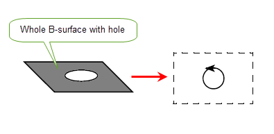

| |
Exporting Data |
| <<< Importing Data | Chapters | Introduction To Application Support >>> |
Standard Representations are ways of outputting geometric information in a standard way, for use in other applications. The information returned is intended only for output.
PK_FACE_output_surf_trimmed provides a means of outputting a trimmed surface representation of a face. This is the part of the surface which represents the bounded surface region of the face.
|
Note: PK_FACE_output_surf_trimmed does not support facet geometry, however PK_MESH_make_surf_trimmed provides similar functionality for meshes. See Section 85.5, “Creating classic geometry from a mesh” for more information. |
A trimmed surface represents a bounded region on a parameterised surface. It does this by representing the region's boundary curves in the parameter space of the surface. Hence such a representation of a face consists of representing its edge loops (excluding any wire or bi-wire edges) in the parameter space of the surface.
The curves used to trim the surface in parameter space are represented by a curve entity called an SP-curve (surface parameter (space) curve). SP-curves are defined with respect to the surface’s parameterisation. For the trimmed surface representation, the SP-curves are used to approximate the edges that bound the face.
There are various surface and SP-curve options in use with the outputting of a trimmed surface representation of a face, these options control the following:
The surface whose parameter space is to be used can either be the surface attached to the face, or a B-spline representation of that face.
When the surface to use is a B-spline approximation further options that can be set are:
surf_tolerance |
specifying a tolerance where the tolerance is the maximum distance between the B-spline and the surface it represents (Default: 0.00001). |
cubic |
|
non_rational |
These options are available for SP-curves which are to be constructed and they cover:
These options relate to the quantity of data to be returned, they are:
A trimmed surface is essentially a subset of a complete surface. It is described by giving the whole surface along with a set of curves that describe the boundary of that part of the whole surface that it occupies, it is helpful to view these curves as curves along which the surface was trimmed in order to leave the area of interest.
The convention that Parasolid applies when deciding which side of the cut is the area that is to be retained is:
|
Note: This definition refers to the surface, the face is on the left (with respect to the face normal) if, and only if, the surface and face senses are the same. |
Because Parasolid is cutting in the surface the description of the trimming curves is best expressed in terms of where to go in the surface. For this reason the trimming curves are curves in the parameter space of the surface.
For example, consider the top of the following cube where the surface is an infinite plane, the outer boundary is a rectangle in parameter space and the hole is a circle in parameter space:
Figure 92-1 Trimming curves keeping the face on the left
As the trimming curves are in parameter space their shape need not correspond (directly) to that of the edges they represent. For example, consider the top of the following spun solid and its representation:
Figure 92-2 Representation of a spun solid
The shape of the SP-curves representing the boundaries of a face corresponds to how those boundaries would look if you painted constant parameter lines on the face, then took the face off, and stretched and ironed it flat so that all the constant parameter lines came out flat and evenly spaced as illustrated in Figure 92-3.
Figure 92-3 Flattening a face without a parametric singularity
There are occasions when ironing out and pasting flat with an even spacing result isn't possible without doing an infinite amount of stretching. This happens when the parameterisation is bunched up to a point in one direction, at a parametric singularity. An example of this is at the N-pole of a sphere as illustrated in Figure 92-4
Figure 92-4 Flattening a face with a parametric singularity that requires an infinite stretch
In such cases, the trimming curves describing the boundaries may leave gaps as illustrated in Figure 92-5.
Figure 92-5 Representation of a face with a parametric singularity that leaves a gap in the representation
Such descriptions with gaps in the boundaries are not always desirable. Options, PK_FACE_trim_confine_closed_c and PK_FACE_trim_confine_periph_c, when using PK_FACE_output_surf_trimmed are designed to make the trimming curves join up in the parameter space by adding extra trimming curves to fill in the ‘infinite stretch’ tear as illustrated in Figure 92-6.
Figure 92-6 Closing the gap in the representation of a face with parametric singularity
The same effect, as described in Figure 92-6 results when using the degeneracies option PK_FACE_trim_degen_yes_c. This option also represents the isolated parametric degeneracies.
Gaps can also appear in the boundary description in parameter space through the way periodicities are treated. Surfaces with periodicities can be viewed as flat surfaces glued along a seam line. The viewpoint requires the trimmed surface output to first cut the (sur)face along the seam and then proceed to iron it out flat. This process, however, cuts and opens out boundaries as well as the surface as illustrated in Figure 92-7.
Figure 92-7 Cutting and opening boundaries as well as the surface (option PK_FACE_trim_confine_yes_c)
This view of periodic surfaces is optional when using the options PK_FACE_trim_confine_yes_c in PK_FACE_output_surf_trimmed. The alternative is to follow the boundaries as they cross the seam, in which case they are not confined to a single period of the parameter space, by using the option PK_FACE_trim_confine_no_c as illustrated in Figure 92-8.
Figure 92-8 Following the boundaries as they cross the seamline (option PK_FACE_trim_confine_no_c)
When it is necessary to close the loops, use either of the options PK_FACE_trim_confine_closed_c or PK_FACE_trim_confine_periph_c in PK_FACE_output_surf_trimmed as illustrated in Figure 92-9. Here the outputting a trimmed surface function essentially views the seam-line cuts as a face boundary that it had earlier been convenient to ignore. In the previous example the following view is taken.
Figure 92-9 Using the option PK_FACE_trim_confine_closed_c or PK_FACE_trim_confine_periph_c to close the loops
Further to this theme of cutting surfaces along invisible seams, Figure 92-10 shows that the result of cutting the face on the illustrated seam would result in two individual pieces:

Figure 92-10 Cutting a surface along an invisible seam, producing two trimmed surfaces
Here PK_FACE_output_surf_trimmed is forced to produce two trimmed surfaces when it is asked to cut the face and produce closed, joined up loops. In effect, our viewpoint implied that the original face was actually two faces glued together along the ignored seam.
The word ‘trimmed’ in trimmed surface implies that something has been removed from the whole surface. In considering faces there is one kind of boundary that effectively trims nothing. This is the natural boundary of the surface, i.e. that part of the surface that marks out the limits of its definition.
An example of such a boundary is the rectangle of bounding constant parameter lines, B-curves of a B-surface. Spheres, on the other hand, have no such boundary.
If this natural boundary coincides with one of the face boundaries then, as it effectively trims nothing, it can readily be accepted that it be omitted from the trimmed surface PK_FACE_trim_confine_closed_c is selected. Its omission is independent of whether the face has holes or not as illustrated in Figure 92-11.
Figure 92-11 Omitting the natural boundary when using the option PK_FACE_trim_confine_closed_c
To summarize, the following factors can lead to occurrences when the SP-curve loops are not closed:
Tolerances could be said to be present in Parasolid to reflect the extent to which geometries don’t meet. For example, edge tolerances reflect the extent to which surfaces don’t meet at a common boundary, and vertex tolerances reflect the size of gaps between edge geometries meeting.
When the gaps represent gaps between edge/fin geometries at a tolerant vertex, the size of the gaps should be less than twice the tolerance of the vertex.
Otherwise accurate faces may have tolerant vertices where the tolerant edge of a neighboring face intersects its boundary. While it may be expected that the accurate edges of the face meet there, this is not always possible. A simple example of this would be a cube with the top face replaced by two planar sheets, one of which is a micron above the other, and which share a common tolerant edge. All edges on the cube are accurate except for the mid-line across the top of the cube. Figure 92-12 shows the side view of the cube.
Figure 92-12 Two planar sheets sharing a common tolerant edge
The top two accurate edges do not intersect, and typically have a gap at the vertex of about one micron - these are the gaps that Parasolid is trying to hide from you, and deal with, through the use of tolerances.
A parameterisable surface is defined in terms of an evaluator function which given two parametric values, u and v, maps to a single point in space. Typically this function is only defined on a certain range of values in u and v.
f(u, v) -> (x, y, z) u e [a, b], v e [c, d]
We can consider this vector valued function as three scalar valued functions, with the same arguments.
f(u, v) -> (f1(u, v), f2(u, v), f3(u, v))
Consider a function which maps from a single parametric value t, to a pair of values, u and v.
Similarly to the surface function, the function g, which maps to u,v space can be considered as two scalar functions.
By combining the two functions we can have a mapping from a single parameter value to a single point in space. Consider now, all the values of t in a particular range, or interval. Each value maps onto a point in space, and so we have created a parametric curve.
f(g(t)) -> (x, y, z) t e [l, m]
In the scalar format, for completeness.
f(g(t)) -> (f1(g1(t), g2(t)), f2(g1(t), g2(t)), f3(g1(t), g2(t)))
Because of the way that this curve has been constructed, we know that all the points of the curve lie on the surface. The 2-dimensional function g, which maps t into u,v space is called a Surface Parameter (space) curve, or SP-curve.
An SP-curve therefore represents a 3-space curve as a curve in the parameter space of the surface.
In Parasolid, SP-curves are 2d B-spline curves, which are allowed to be rational. See Appendix B, “The Mathematical Form Of B-Geometry” for information on B-spline curves in 3d. 2d B-spline curves are very similar. It should be understood that whilst the B-spline vertices in other cases are points in 3d space, the 2d B-spline vertices of SP-curves represent points in the parameter space of the basis surface.
An SP-curve must be G1-continuous, and if periodic, it must meet itself with G1 continuity, surface degeneracies may only appear at the start or end of an SP-curve. An SP-curve may pass through a periodic parameter space boundary, but must lie within the parameter range defined by PK_SURF_ask_params on limited surfaces. On limited surfaces, it is permissible for the B-spline vertices to lie out of parameter range if the B-spline curve so defined lies within the range.
The SP-curve is parameterised according to the underlying knot vector.
The SP-curve entity exists for:
See Chapter 34, “Controlling Redundant Topology”, for information on how Parasolid identifies and deletes redundant topology.
See Chapter 35, “Splitting Topology”, for information on how Parasolid can split topology.
| <<< Importing Data | Chapters | Introduction To Application Support >>> |